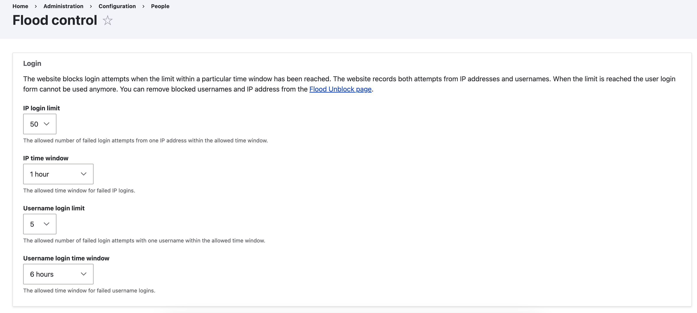

As the digital landscape evolves, ensuring the security of your Drupal website becomes paramount. One of the cornerstones of Drupal security lies in its ability to thwart malicious login attempts and prevent abuse through mechanisms like the Flood Control module and the flood table. Let’s delve deeper into these essential components.
Drupal Flood Control: Protecting Against DoS Attacks
Drupal flood control is a robust security feature designed to shield your website from denial-of-service (DoS) attacks by restricting the number of requests a user or IP address can make within a designated timeframe. This mechanism is crucial for maintaining website performance and preventing malicious activities.
How Drupal Flood Control Works
Flood control in Drupal is a proactive measure to safeguard your site from potential threats. It involves action tracking, configurable limits, and temporary blocking:
-
Action Tracking: Drupal monitors various user actions that could be exploited in a DoS attack, such as login attempts, form submissions, node creations, and comment postings.
-
Configurable Limits: Each monitored action has a configurable limit that defines the maximum number of attempts allowed within a specific period.
-
Temporary Blocking: If a user or IP address exceeds the set limit for a specific action, Drupal temporarily blocks them from performing that action again.
The Crucial Role of the Flood Table
At the heart of Drupal's defense mechanism lies the flood table—a repository of failed login attempts. This tabular structure keeps a meticulous record of IP addresses and usernames associated with unsuccessful login tries, furnishing invaluable data for the Flood Control module.
Structure of the Flood Table:
-
Event ID: Unique identifier for each tracked event, such as a login attempt.
-
Identifier: Records the IP address or username linked with the event.
-
Timestamp: Chronicles the moment the event transpired.
-
Expiration: Specifies when the record should be purged from the table.
Benefits of Drupal Flood Control
Implementing flood control in Drupal brings several significant advantages:
-
Prevention of DoS Attacks: By limiting the number of requests, flood control makes it substantially more challenging for attackers to execute DoS attacks that could incapacitate your website.
-
System Stability: Flood control ensures that excessive requests do not bog down the server, thereby preserving the system’s stability and overall performance.
Managing Flood Control: Core and Contributed Modules

Drupal provides both core and contributed modules to manage flood control settings effectively:
Core Flood Control
Drupal core comes with built-in flood control functionality, accessible via the administration panel. Here’s how to navigate and configure it:
-
Accessing Settings: Go to Configuration > People > Flood Control. This section allows you to set request limits for various actions like login attempts and comment submissions.
-
Managing the Blocklist: Navigate to People > Flood Unblock to manage the blocklist. Here, you can unblock specific users or IP addresses if necessary.
"Flood Control" Contributed Module
For those seeking a more user-friendly interface with additional features, the contributed "Flood Control" module is a viable option. This module enhances the core functionality by offering:
-
Simplified Configuration: A more intuitive interface for setting up flood control limits.
-
Extended Features: Additional capabilities such as logging blocked IPs for better monitoring and analysis.
Best Practices for Enhanced Security
To further bolster your Drupal website's security, consider the following practices:
-
Keep Drupal Updated: Regularly update your Drupal core and modules to leverage the latest security patches and improvements.
-
Monitor Login Attempts: Utilize security monitoring tools to track login attempts and detect suspicious activities early.
By implementing Drupal flood control and adhering to these best practices, you can significantly enhance the security and stability of your website, protecting it from potential DoS attacks and other malicious threats.